Before & after
From a stock lotus to a signature
The lotus stays as the link to the old brand. What changes is everything around it: the lotus moves from an icon above the name to a crown sitting on it, and the letters themselves carry the ceremony.
The name
सम्यक्
Sanskrit for complete, whole, done rightly.
Samyakk is a wedding destination store in Richmond Town, Bengaluru. Bridal wear, sarees, menswear and womenswear sit under one roof, so the whole wedding party can be dressed in one place.
The old identity was a stock lotus over a plain lowercase serif. It was tidy, but it could have belonged to a spa, and it said nothing about weddings, craft or celebration. Samyakk needed a brand as considered as the trousseau it sells, and one that could stretch from a swing tag to a whole store.
I drew a new wordmark with a lotus crown and a swash that curls under the name, set in temple gold. I built a palette from lotus pinks, celadon and banyan green, carried it into the store revamp, and extended it across stationery, tags, garment covers, carry bags, gift boxes, a vanity case and staff uniforms.
Samyakk approved the new identity at the first presentation and replaced their old logo with it.
Before & after
The lotus stays as the link to the old brand. What changes is everything around it: the lotus moves from an icon above the name to a crown sitting on it, and the letters themselves carry the ceremony.
The mark
A high-contrast display serif, redrawn by hand where the name needed a little ceremony. Clear space is measured by the lotus itself, so the mark always has room to breathe on foil, fabric and signage.
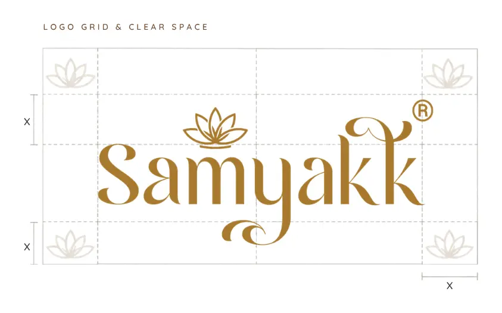
A five-petal lotus sits over the y like a maang tikka, centred on the word rather than above it.
The y drops below the line and turns back on itself, a flourish taken from hand-lettered wedding cards.
The final k opens into a soft hook, so the name ends with a gesture instead of a full stop.
Lotus markFor small spaces: card backs, the thank-you note, tissue stickers.
SealThe lotus in a ring, used as the gift box closure and on garment labels.
Colour
Petal pinks, leaf greens and gold, with banyan green as the anchor. These are the colours I proposed for the store revamp, and every printed piece draws from the same six. Click a code to copy it.
The wordmark. Foiled on every piece.
Garment covers, staff uniforms, store accents.
Business cards, carry bags, the vanity case.
Swing tags, chevron bags, tissue wrap.
Gift boxes and the lotus seal.
Card stock, notes and inner trays.
Stationery
A celadon front with a painted lotus border and a gold-foiled name. The back is quiet ivory with a gold frame, listing the four departments: menswear, womenswear, bridal and sarees.
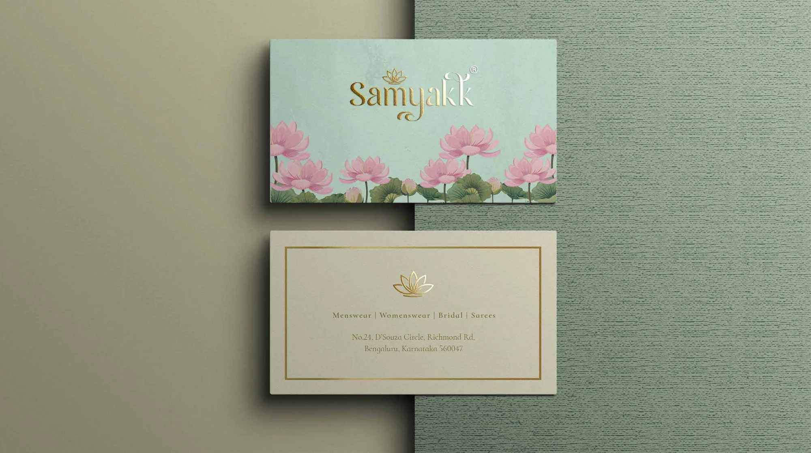
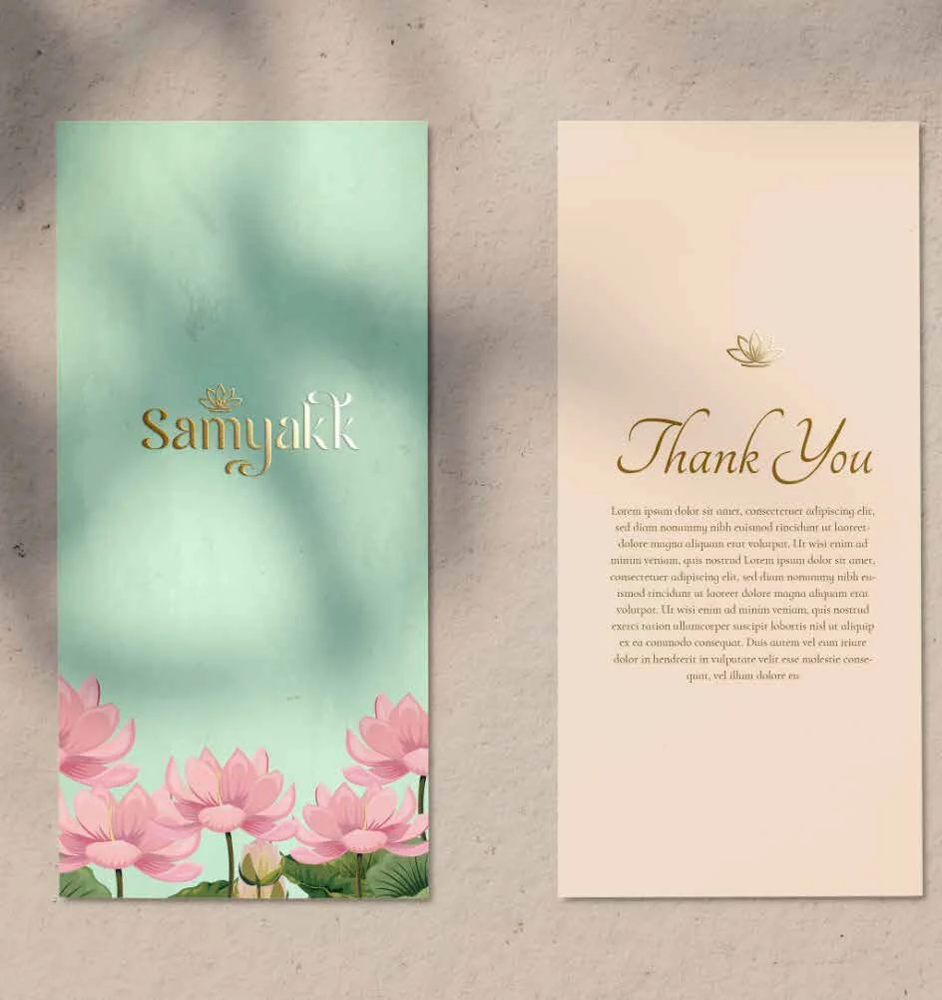
In store
The gold chevron runs through the retail pieces like a woven border. Pink and celadon bags pair up at the counter, and jute totes give a softer option for sarees and everyday buys.
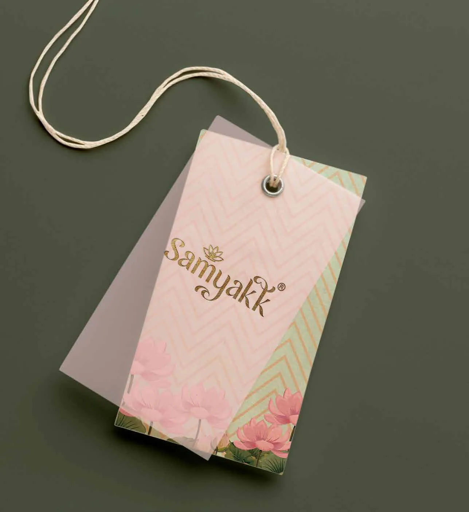
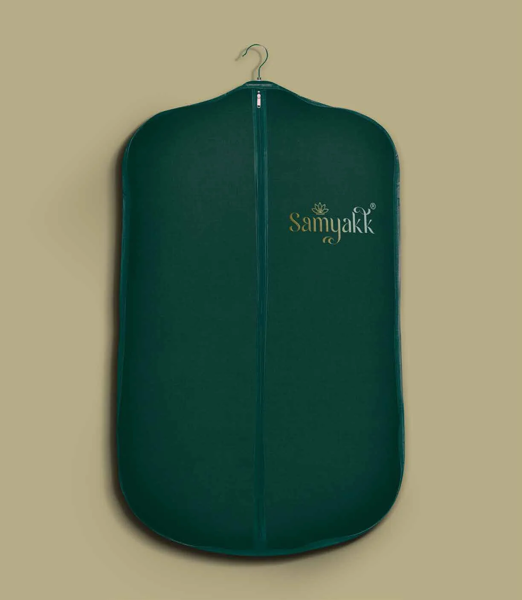
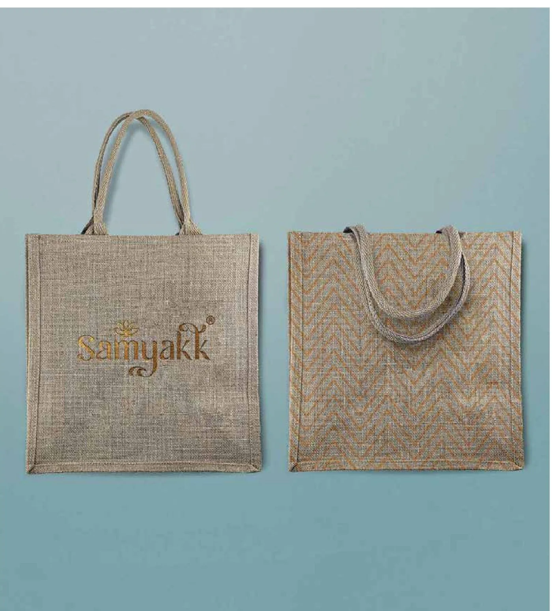
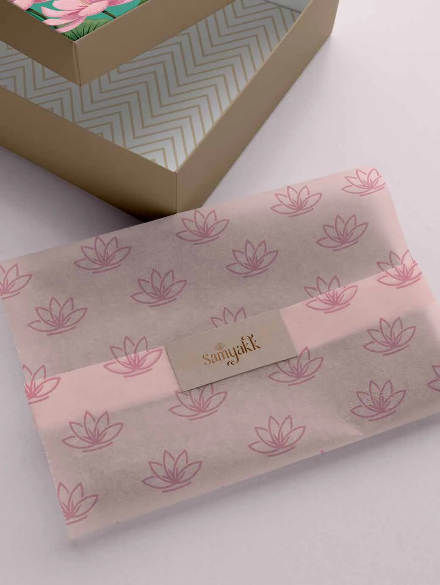
Packaging
One sliding box, three ways to dress it. Each sleeve wraps a white chevron tray, so the bride opens gold onto ivory. Pick a finish to see it.
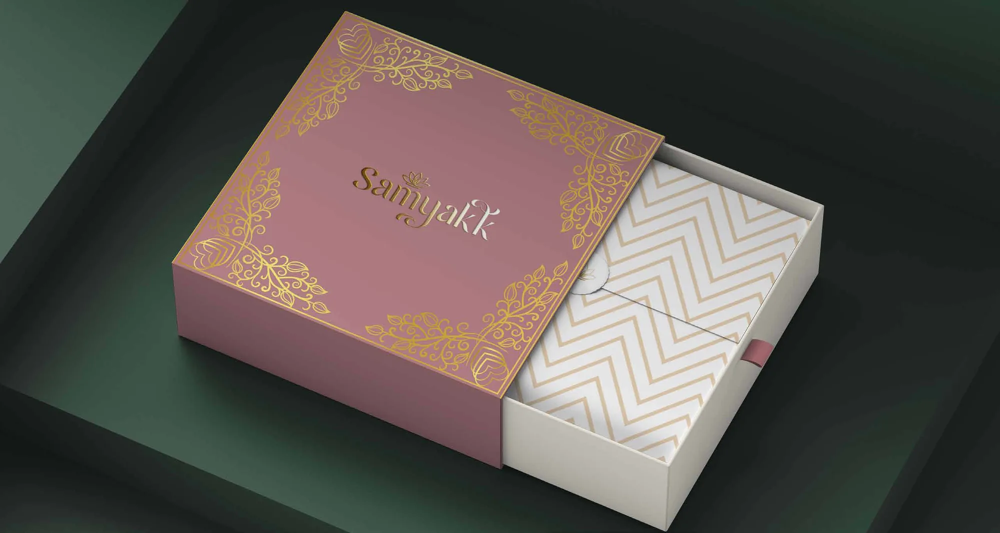
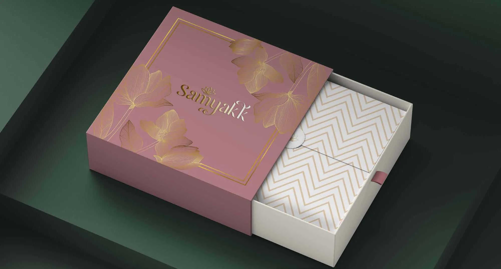
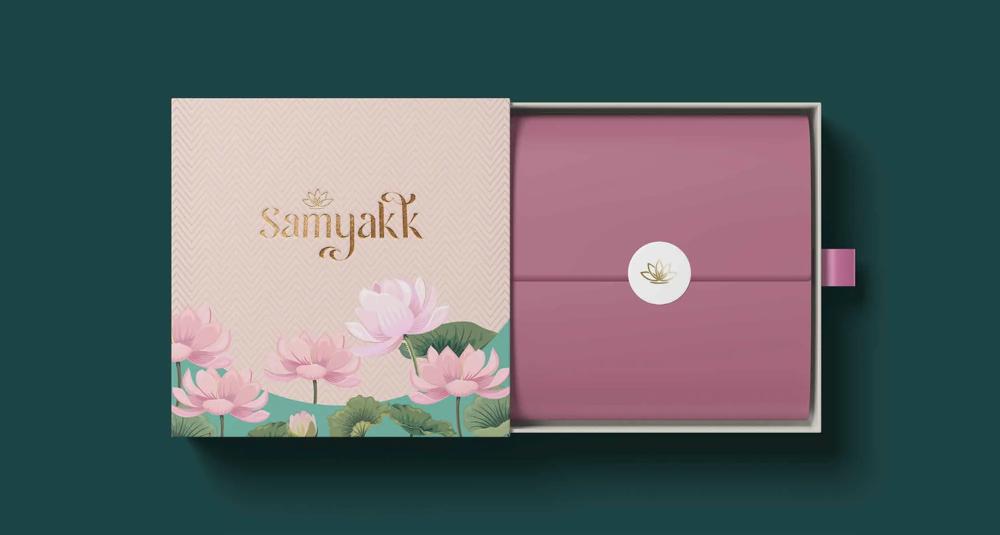
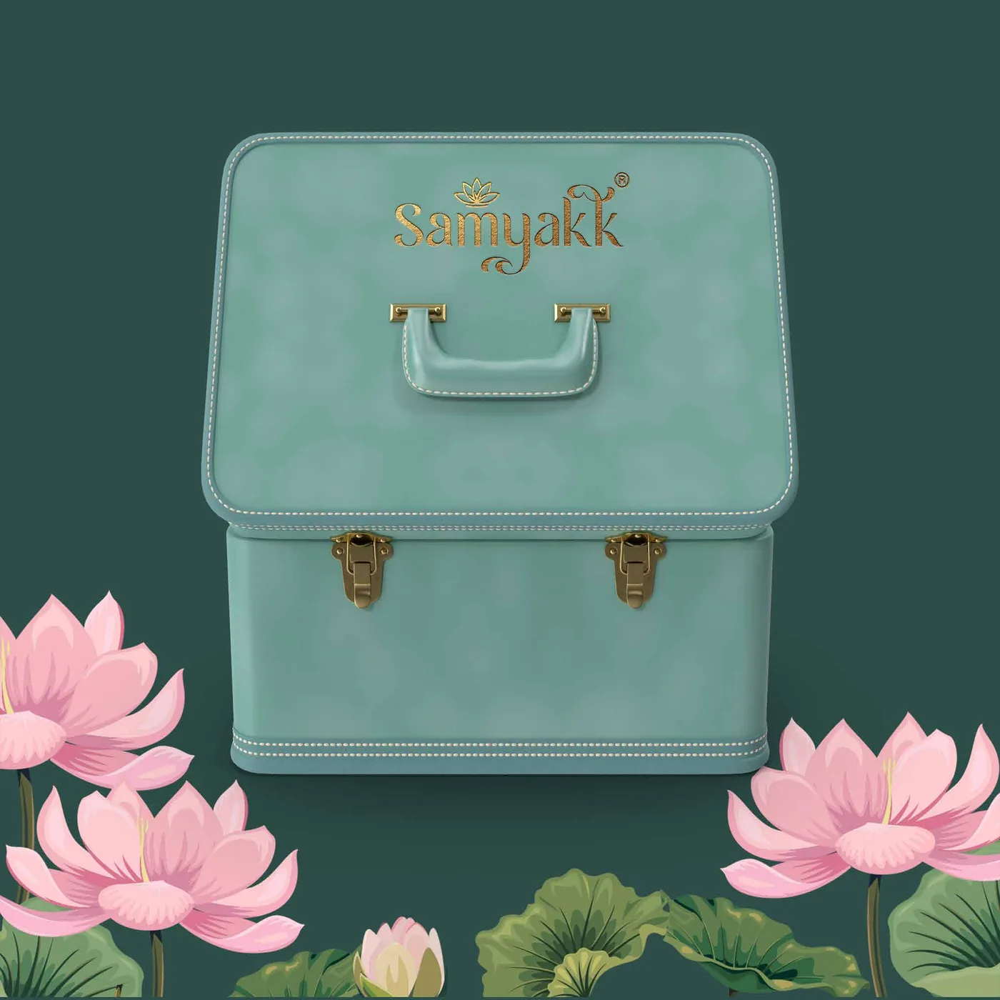
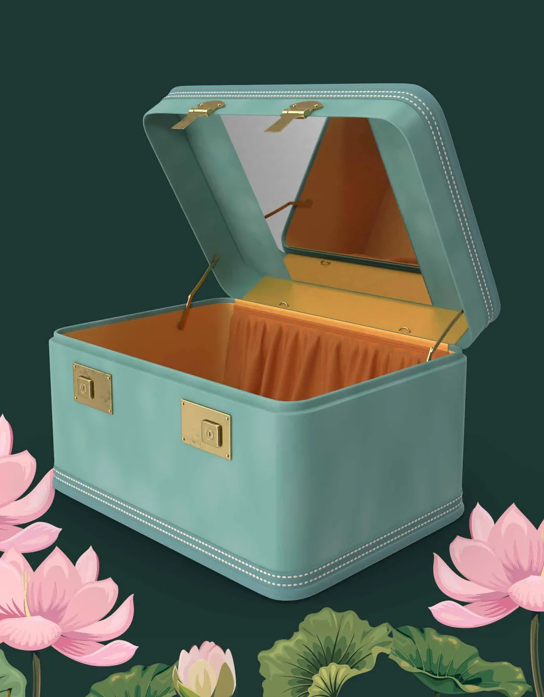
Staff uniform
A banyan green shirt with gold piping and a small chest wordmark, so the people on the floor read as part of the store.
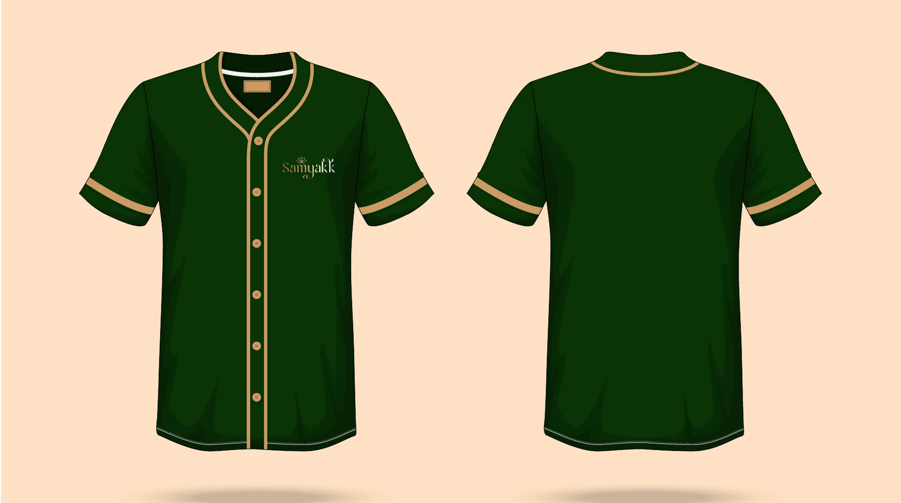
Store revamp
The same colours carried into the Richmond Town store: banyan green and gold for the fixtures, lotus blush and celadon for the bridal floor.
Photos needed
No store photographs were in the uploaded files. Add before and after shots of the store to the repo and they'll go here, with the palette chips below as captions.